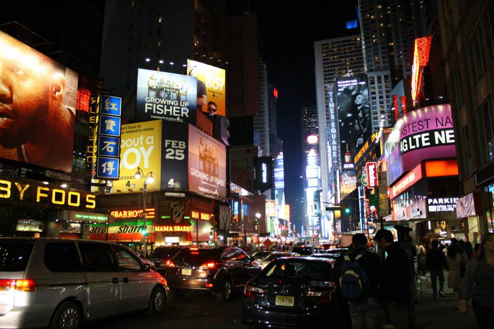
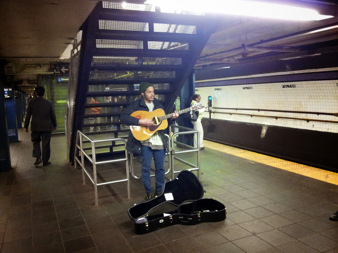
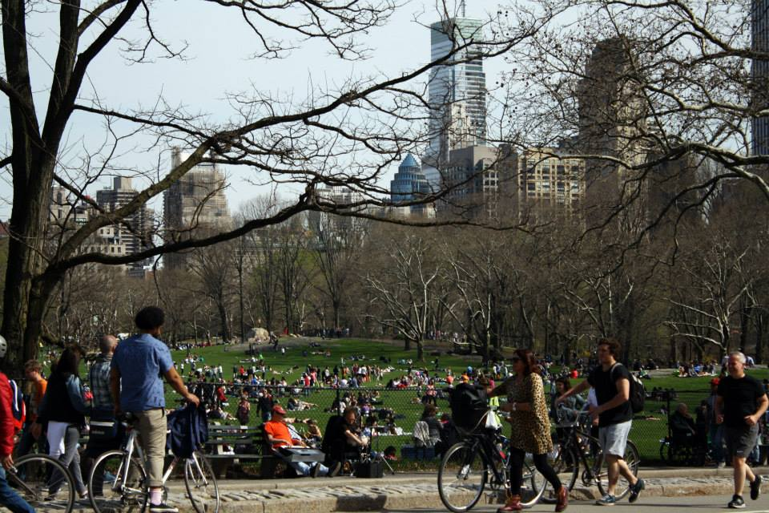

NYC: Lights, People, Action

What can I say about New York City that hasn’t already been said? These lights will make you feel brand new, these streets will inspire you. You get the drift. This is a city filled with movement and magic. I knew all this in my head, but actually going there and basking under the glow of a million LEDs in Times Square opened my eyes. I have gone from darkness into light. Bright, beautiful light.

And then there’s the people: wave after wave of tourists, native New Yorker’s, dreamers, wanderers, celebrities, bottom-dwellers, and everyone in between. I felt energized amidst this constant throb of people and their energy. At the same time, I realized how easy it is to feel alone in a crowd. People are so engrossed in their own lives and calendars that everything else blurs, becoming a casualty of their busyness. Granted, we all get caught up and blinded by our own agendas, but in New York, everything is amplified.

Speaking of amplification, there are so many good musicians here in NYC! Subway musicians who can give pop-stars music lessons sing their mellifluous tunes to whoever might lend a ear (and a few dollars). I love that about cities: there’s so much talent just waiting to be found. Who knows, that girl sitting next to you on the subway might be an accomplished Broadway singer.

One of my favorite experiences in the city was biking around Central Park. Now, Central Park is like an oasis in the middle of a desert. Juxtaposed between the concrete jungle and rising skyscrapers are trees and lakes. Here, time slows down, if only for a moment; it’s a stark contrast to the hubbub of Times Square. There are people napping, strolling, biking, and just plain relaxing. The weather was perfect, with the sun shining gently and a gentle breeze whispering softly. Basking in the glorious outdoors while riding in the wind and seeing the city’s outline peek through the trees was a surreal experience.
Well, I must seem like a NYC fanboy by now; the city certainly lured me in with its siren song. Give it a try and experience it for yourself. This city might very well surprise and inspire you.
James Issac
A whole new world, that’s where we’ll be.